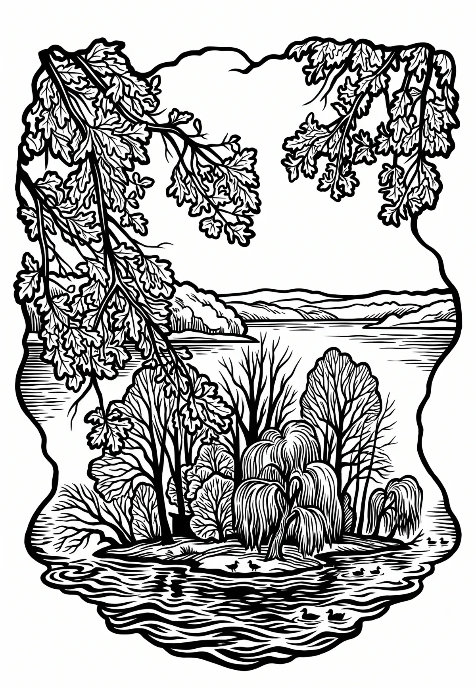

Rybník Svět
Jihočeský kraj · 426 m n. m.

technická památka · #070
Svět je rybník na jižním okraji Třeboně, přesně na 49. rovnoběžce, pouhý 1 km od třeboňského centrálního Masarykova náměstí. Dvakrát lomená hráz je dlouhá 1400 m, vysoká 7,5 m. Vodní plocha má rozlohu 201,5 ha.